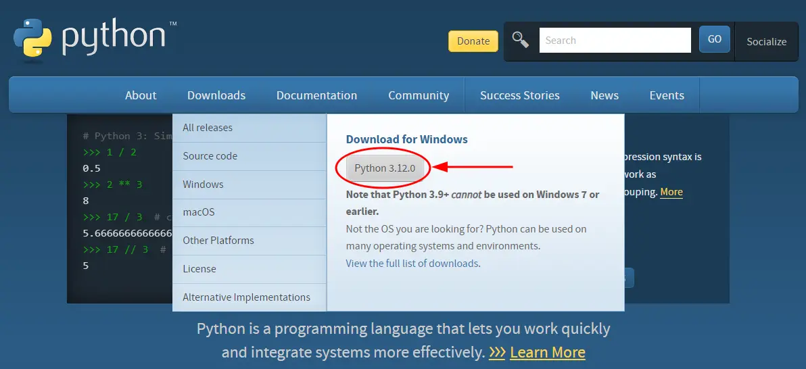
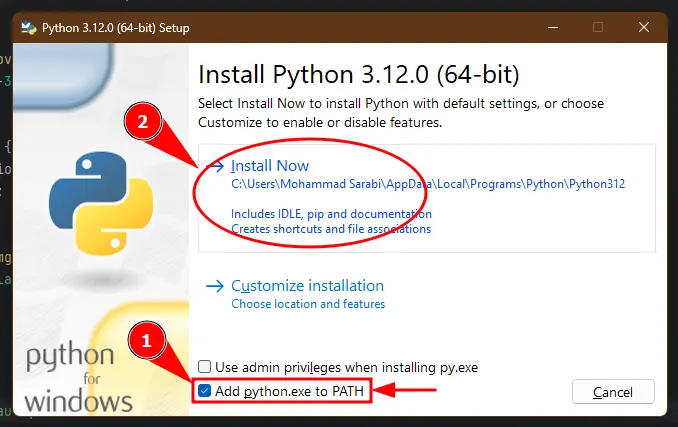
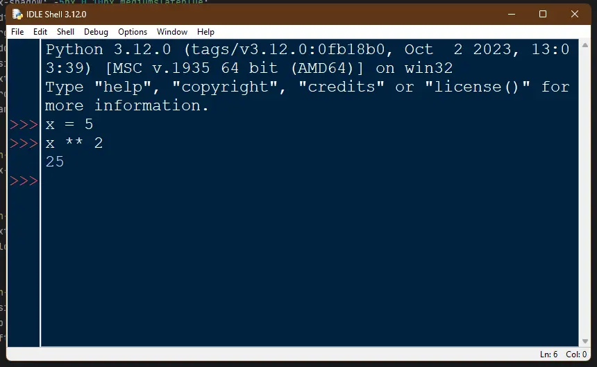
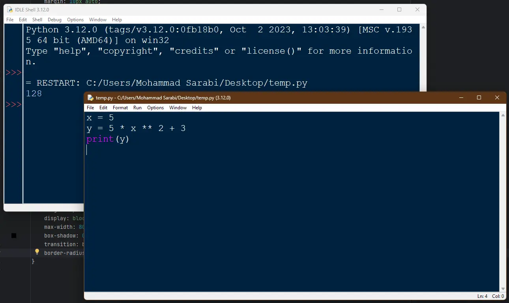

چرا Python؟
پایتون یک زبان برنامهنویسی سطح بالا و همهکاره است که به سادگی و خوانایی بالایش معروف است.
تاکید پایتون روی خوانایی است.
ترجمهی چند جملهی اول ذن پایتون (
PEP20
با import this هم میتونید ذن پایتون رو ببینید.):
- زیبا بهتر از زشت است.
- صریح (explicit) بهتر از ضمنی (implicit) است.
- ساده بهتر از پیچیده است.
- پیچیده بهتر از مبهم و غیر قابل فهم است.
- صاف بهتر از تو در تو است.
- پراکنده بهتر از متراکم است.
- خوانایی مهم است.
- موارد خاص آنقدر خاص نیستند که قوانین را زیر پا بگذارید...
نحوه نصب Python روی ویندوز
برای نصب Python مراحل زیر رو طی کنید: به سایت python.org برید و از قسمت Downloads و زیر Download for Windows روی آخرین نسخهی Python کلیک کنید.  حالا فایل exe که دانلود کردید رو اجرا کنید. اینجا حتما اول تیک Add python.exe to PATH رو بزنید و بعد روی Install Now کلیک کنید.  در آخر روی close کلیک کنید. به همین راحتی Python نصب شد.کدنویسی در محیط IDLE
پایتون همراه با محیط برنامهنویسی خودش که IDLE هست نصب میشه. برای اجرای این نرمافزار IDLE رو توی Start ویندوز سرچ کنید. اینجا دو روش برای کد نویسی دارید. یا مستقیم توی ترمینال کدهاتون رو تایپ کنید:  و یا از منوی File گزینه New File رو انتخاب کنید، یه پنجره جدید باز میشه. توی این پنجره کدهاتون رو بنویسید و ذخیره کنید. بعد از منوی Run گزینه Run Module رو انتخاب کنید. خروجی کدها توی پنجره قبلی IDLE Shell نشون داده میشه: عملگرها در Python
قبل از عملگرها دربارهی کامنت بگم.
هرچیزی که بعد از علامت
#
نوشته بشه توسط پایتون نادیده گرفته میشه.
اینطوری میتونیم توضیحاتی راجع به کد بدیم و یا قسمتی از کد رو غیر فعال کنیم.
import math
r = 3 # radius
x = 0
# x = 1
# the equation for the upper half of a circle:
y = math.sqrt(r ** 2 - x ** 2)
print(y)
#>> 3.0
اینجا از کامنتها استفاده کردیم تا توضیح بدیم که متغیر اول شعاعه، معادله مال دایرهست، و همچنین مقدار x برابر با صفر میمونه، چون اون قسمت از کد که مقدارش رو یک میگذاره با کامنت غیر فعال کردیم. نتیجه کدها رو هم با کامنت نشون میدم (مثل 3.0 بالا).
برگردیم به عملگرها (operators). عملگرها علامتهای خاصی هستند که کاری روی مقادیر یا متغیرها انجام میدن. عملگرهای مهم پایتون:- عملگرهای محاسباتی: عموما عملگرهای ریاضی هستند که روی اعداد استفاده میشوند.
این عملگرها عبارت اند از
+ - * / % ** //البته این عملگرها برای انواع داده مختلف عملیات خاص خودش رو انجام میدن. مثل عملگر جمع (+) که دو تا رشته رو به هم وصل میکنه.
2 + 1 # 3 -> addition
2 - 1 # 1 -> subtraction
2 * 1 # 2 -> multiplication
5 / 2 # 2.5 -> division
5 % 3 # 2 -> modulus
2 ** 3 # 8 -> exponentiation
8 // 3 # 2 -> floor division
- عملگرهای مقایسه: این عملگرها برای مقایسه دو مقدار استفاده میشن و یه مقدار True یا False رو برمیگردونن.
5 == 2 # False
5 != 2 # True
5 > 2 # True
5 >= 2 # True
5 < 2 # False
5 <= 2 # False
-
عملگرهای اختصاص دادن (assignment):
این عملگرها برای اختصاص دادن (مقدار دادن) به متغیرها استفاده میشه.
مهمترین عملگر این دسته
=هست که مقدار سمت راست رو به متغیر سمت چپ اختصاص میده.
با یک مثال بقیه عملگرهای assignment رو بگم.x += 5برابر است باx = x + 5یعنی اول مقدار قبلی x با 5 جمع میشه، و بعد در x ذخیره میشه. لیست بعضی از این عملگرها:
x = 5
x += 5 # x = x + 5
x -= 5 # x = x - 5
x /= 5 # x = x / 5
x *= 5 # x = x * 5
x %= 5 # x = x % 5
x //= 5 # x = x // 5
x **= 5 # x = x ** 5
-
عملگرهای منطقی: این عملگرها عبارتاند از
and or notو روی دادهی بولین (True, False) استفاده میشن:
True and False # False (True only if both statements are True)
True or False # True (True if at least one of the statements are True)
not True # False (Reverses the result)
انواع داده در Python
انواع داده در پایتون داینامیک هستن، یعنی نیازی نیست که مشخص کنید یک متغیر از چه نوع دادهای هست.
در Python انواع مختلفی داده برای کار با اعداد، متن، مقادیر بولین، لیست و غیره وجود داره.
تابع
type()
نوع دادهی یک متغیر رو بر میگردونه.
به صورت خلاصه هر کدوم از انواع داده رو مرور میکنیم:
-
int (اعداد صحیح):
اعداد صحیح هستن که قسمت اعشاری ندارن. مثل
5, -14, 4815162342 -
float (اعداد اعشاری):
اعدادی هستن که قسمت اعشاری هم دارن (حتی اگر اعشارش صفر باشه)، مثل
215.5, -3.14, 8.0 -
str (رشته):
این نوع داده برای یک رشتهی متنی (رشتهای از کاراکترها) به کار میره.
نوع string باید داخل کوتیشن باشه، مثل
"Alice", 'Jane' -
bool (بولی، صحیح یا غلط):
تنها دو مقدار میتونه داشته باشه:
True, Falseو معمولا برای شرط (condition) استفاده میشه
list, tuple, set, dict, 'NoneType'
که بمونه برای بعد.
کار با اعداد
اولویت عملگرها در پایتون مهم است. مثلا در
6 - 2 * 3
اگر محسابات از چپ به راست انجام میشد، نتیجه 12 میشد. ولی اولویت ضرب بیشتر از منها است، و نتیجه 0
میشود.
ترتیب اولویتها به این قرار است:
()***, /, //, %+, -
برای مثال در زیر میبینید که فقط با استفاده از پرانتز نتیجه چطور تغییر میکند:
x = 4
y = 2
result1 = 5 * x ** 2 - y * 3 + 4
result2 = 5 * x ** 2 - y * (3 + 4)
result3 = (5 * x) ** (2 - y) * 3 + 4
print(result1)
print(result2)
print(result3)
#>> 78
#>> 66
#>> 7
برای چاپ نتیجه در خروجی از فانکشن
print()
استفاده میکنیم.
چند تا نکته:
عملگر
/
همیشه خروجی float برمیگردونه، حتی اگر نتیجه قسمت اعشار نداشته باشه.
نتیجه تقسیم صحیح با
//
روی int، از نوع int هست، و قسمت اعشار حذف میشه.
اگر توی عبارتمون عدد float و int با هم به کار رفته باشن خروجی از نوع float هست.
چند تا مثال از نکات بالا:
x, y, z = 6, 2, 4.0
result1 = x / y # 3.0
result2 = x // y # 3
result3 = x + y + z # 12.0
result4 = x // z # 1.0
print(type(result1))
print(type(result2))
print(type(result3))
print(type(result4))
#>> float
#>> int
#>> float
#>> float
پایان هفتهی اول. اگر چیزی رو فراموش کردم، حتما توی تلگرام @MSarabi بگید تا اضافه/اصلاح کنم.